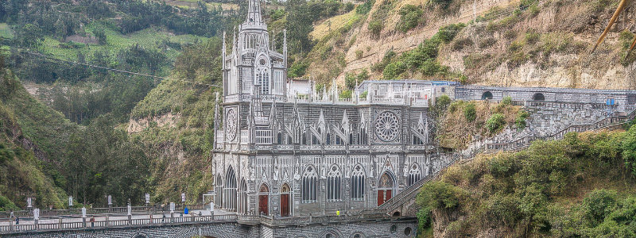
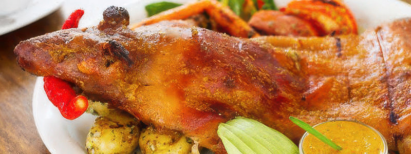
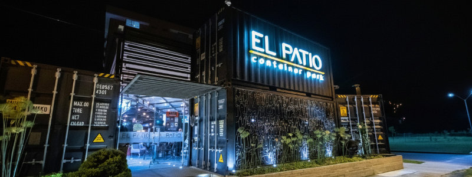

Lugares por Descubrir
En este buscador, vas a encontrar las mayores maravillas de Pasto, entre estas la Iglesia de Las Lajas.
ver más
En este buscador, vas a encontrar las mayores maravillas de Pasto, entre estas la Iglesia de Las Lajas.
ver más
En Pasto vas a encontrar platos típicos y comida de todo el mundo.
ver más
Conoce los patios y mercados donde podés disfrutar de la mejor gastronomía de la ciudad.
ver más